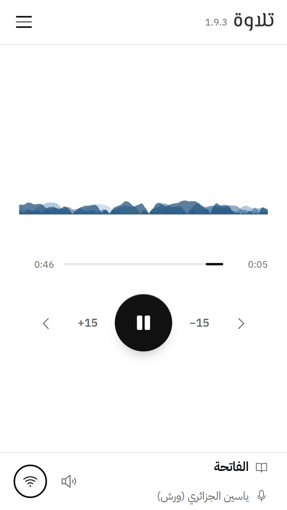

Self-hostable infrastructure for the Open Tilawa WebTorrent stack
A peer-to-peer Quran recitation player that streams audio from WebTorrent peers, with the operator's own node as the HTTP safety net.

contact@tilawah.cc
tilawah.cc